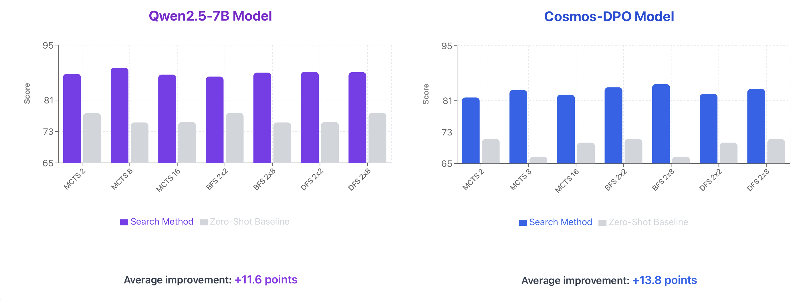
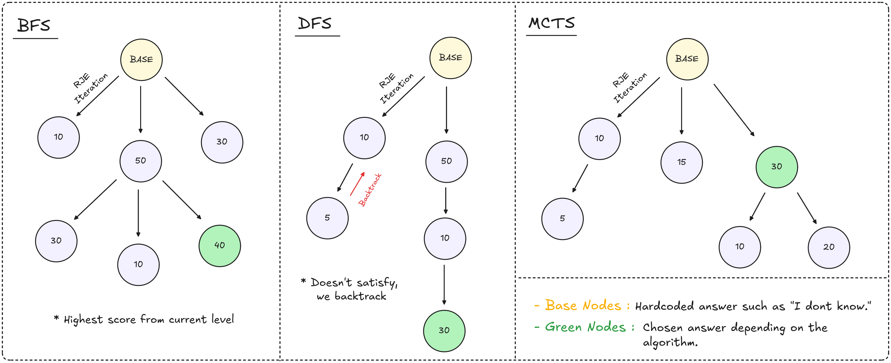
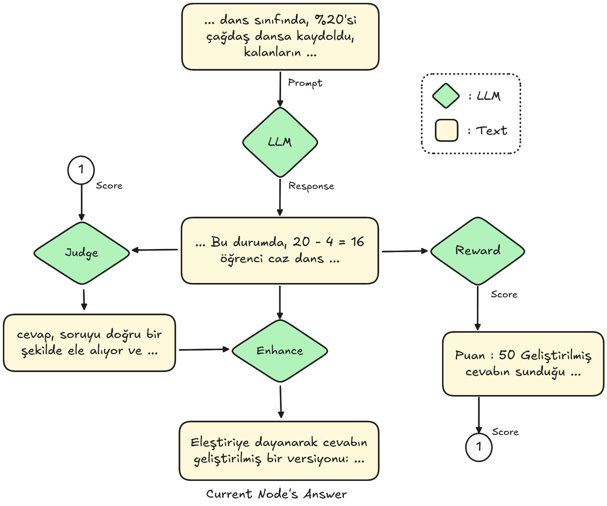
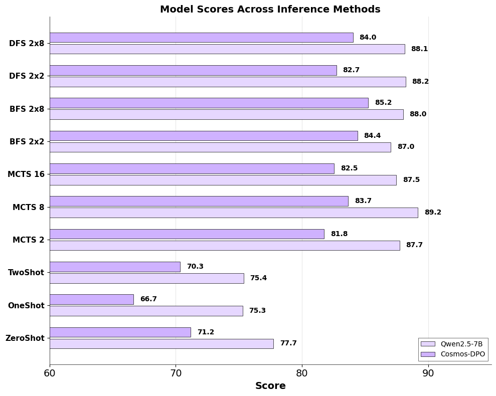

Enhancing Reasoning in Turkish LLMs with Search-Based Inference

System 2 Thinking for Turkish: We bring advanced "thinking" strategies to Turkish AI models. Instead of guessing the answer immediately, our system explores multiple reasoning paths—like a tree of possibilities—backtracking when it gets stuck and self-correcting mistakes along the way.

Abstract
Solving complex math problems in Turkish is challenging for AI models due to limited data. In this work, we improve performance without massive re-training. We combine three key techniques: fine-tuning on high-quality Turkish math data, merging different model "experts" together, and using smart search algorithms (like Tree of Thoughts) that let the model "think" before answering. Our approach boosts accuracy significantly, reaching over 70% on benchmark tests, proving that smarter inference strategies can compensate for data scarcity.
Methodology

Our method improves how the model answers by creating a feedback loop. Instead of just outputting one answer, the model generates a draft, acts as a "judge" to critique its own work, and then produces an "enhanced" version based on that critique. This mimics how a human might double-check their work before submitting an answer.
Results

The results show a clear improvement. The standard model (Cosmos-DPO) performs decently on its own, but when we add our search algorithms (like MCTS or DFS), the score jumps significantly. Merging multiple fine-tuned models also provided a solid boost, showing that combining these techniques is the most effective way to solve hard math problems in Turkish.
BibTeX
@article{Zeer2025Enhancing,
title={Enhancing Mathematical Reasoning in Turkish Large Language Models with Search-Based Inference and Model Merging},
author={Zeer, Ahmed and Shbib, Osama and Yucel, Muzaffer Kaan and Kesgin, Himmet Toprak and Amasyali, Mehmet Fatih},
journal={MEDPRAI},
year={2025},
institution={Yildiz Technical University}
}